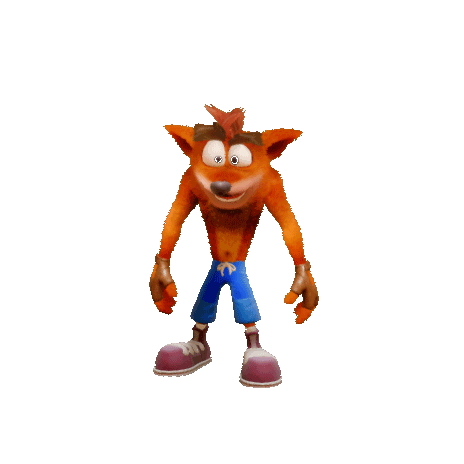
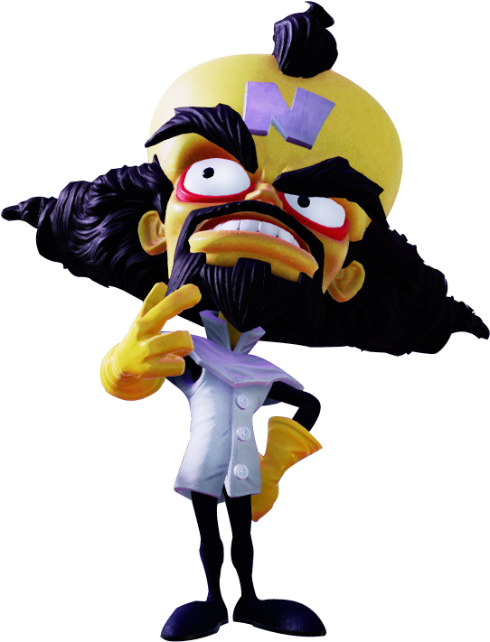
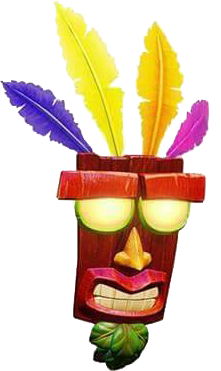
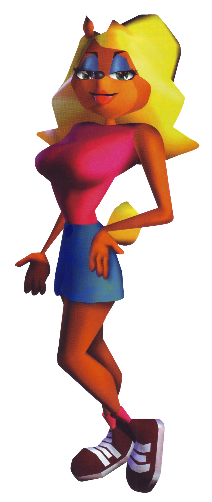

WOAH! C'est Crash Bandicoot! Notre animal toqué, décontracté et intrépide préféré!!
WOAH! Un nouveau jeu de Crash Bandicoot arrive! Visionner le!
Sortie prévue pour le 2 Octobre 2020 sur Playstation 4 et Xbox One

Mais qu'est-ce que Crash Bandicoot?
Crash Bandicoot est un jeu vidéo classique de plates-formes 3D développé par Naughty Dog et édité par Sony Computer Entertainment en 1996 sur PlayStation. Il constitue le premier épisode de la série Crash Bandicoot.
C'est aussi cela dit le protagoniste principal de la série Crash Bandicoot. Initialement prévu s'appeler Willie the Wombat,
il est un Bandicoot barré de l'Est vivant sur l'île N. Sanity, qui a été capturé et évolué par le Docteur Neo Cortex.
Tout au long de la série, Cortex est l'ennemi juré habituel de Crash et est toujours vaincu par Crash afin de maintenir la paix autour de l'île.
Crash est souvent accompagné de son allié, Aku Aku, protagoniste secondaire, toujours prêt à protéger Crash lorsqu'il en avait besoin.
Histoire
Il a été muté par Cortex et son bras droit, le docteur Nitrus Brio , avec l' Evolvo-Ray , qui lui a donné la sapience humaine et l'a rendu anthropomorphe.
Malgré les avertissements de Brio concernant le manque de fiabilité de la machine, Cortex a ensuite envoyé Crash à travers le Cortex Vortex, une machine conçue pour faire de Crash un génie et le laver le cerveau pour qu'il devienne 100% fidèle à chaque commande de Cortex.
La machine a échoué exactement comme Brio l'avait prédit et a mal fonctionné, rejetant Crash. Cela a permis à Crash de s'échapper et de se déchaîner dans le laboratoire. Cortex a poursuivi Crash en essayant de le reprendre, mais Crash a couru par une fenêtre, tombant dans la mer en dessous.
Brillant avec colère son échec, Cortex a commencé les réparations pour le Cortex Vortex et est passé au prochain candidat au lavage de cerveau: Tawna Bandicoot , la petite amie de Crash.
Quelque temps plus tard, Crash s'est réveillé étourdi et perdu sur la rive de l'île N. Sanity . Déterminé à sauver Tawna et à arrêter les plans de domination mondiale de Cortex, il se lance dans une quête pour traverser les îles Wumpa et atteindre le château de Cortex. Crash rencontre bientôt un masque de sorcier, Aku Aku , qui veille sur lui et le protège de divers périls, et développera bientôt un lien paternel étroit avec Crash.
Dans les jeux précédents, il avait tendance à dire "Whoa!" chaque fois qu'il était tué. Dans les derniers jeux, il parlait charabia avec une connaissance très basique de la langue parlée dans le jeu.